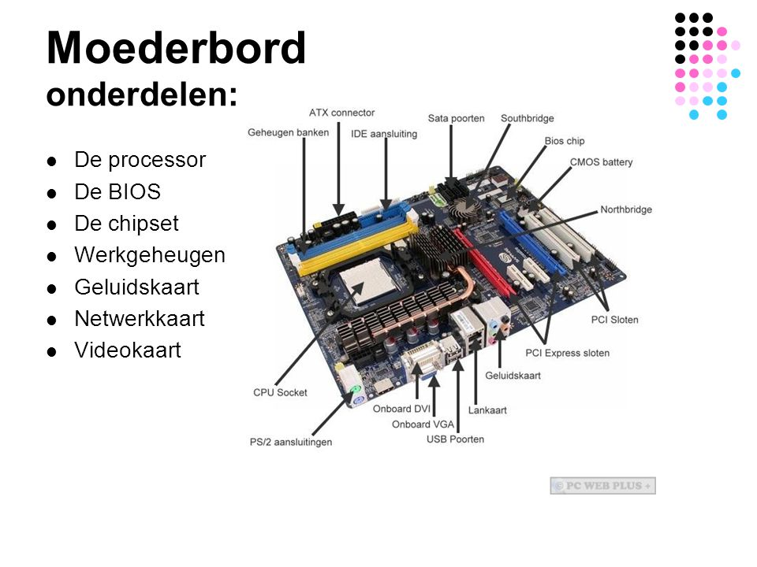
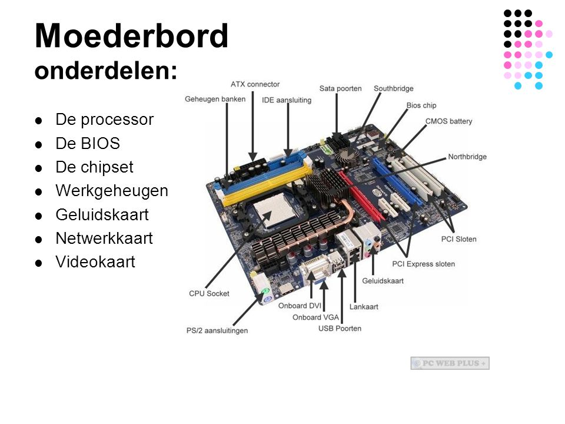

Drielagenmodel | Moederbord | Processor en geheugen | Besturingssysteem
Het drielagenmodel bestaat uit drie niveaus: de toepassingenlaag (software), de logische laag (software) en de fysieke laag (hardware). Deze lagen zijn zowel zichtbaar als onzichtbaar.
De toepassingenlaag bestaat uit allerlei software; de toepassingen of applicaties. Op een smartphone zijn dat de apps die kunnen worden geïnstalleerd vanuit de Google Play Store (Android) of App Store (iOS).
De logische laag bestaat uit software die de hardware aanstuurt. Deze software maakt het mogelijk om toepassingen (zoals apps) op het apparaat uit te voeren. Bij een smartphone bestaat de logische laag voornamelijk uit het besturingssysteem, bijvoorbeeld Android of iOS. We noemen dat een besturingssysteem, omdat het de hardware bestuurt. Ook bepaald het bijvoorbeeld wat de apps mogen doen.
De fysieke laag bestaat uit de hardware die in een smartphone zit; van de accu tot en met de touchscreen.
 
